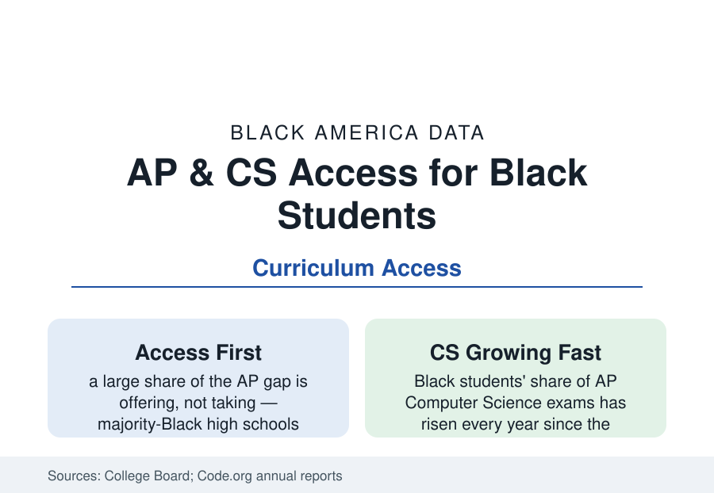

Black Education
Advanced Placement and Computer Science: Black Students' Access Data
Black students take AP courses at rising rates but remain underrepresented in calculus, physics, and computer science — often because their schools don't offer them. The College Board and Code.org data.

The advanced curriculum is where the K-12 data become the college data, and its Black file has two distinct chapters: the students do not take the courses, and the schools do not offer them — in proportions the federal data assign substantially to the second. Black students' Advanced Placement participation has risen for two decades while remaining thinnest exactly where the college-credit and STEM-pipeline value is highest: calculus, physics, and computer science. This article reports the access data.
The Offering Gap: Courses That Don't Exist
The Civil Rights Data Collection's course-offering tables are the file's foundation: high schools serving mostly Black students offer calculus, physics, chemistry, and the full AP suite at significantly lower rates than schools serving few — a gap that persists after the funding file's dollars are accounted, driven by the small-school problem (advanced courses need minimum cohorts), the teacher-supply pipeline (the physics and CS teacher shortage is worst exactly in these schools, in the NSF's workforce data), and the tracking decisions that starve a course of its feeder enrollment years before it would run. The rural file compounds it (the small Black Belt high school offering no physics at all), and the virtual-school and dual-enrollment channels are the data's documented workaround — state virtual AP programs and community-college partnerships now supply a measurable share of advanced coursework to students whose buildings cannot, with completion data that trail the in-person baseline and improve with each cohort.
Participation and Performance: The College Board Tables
The College Board's annual data trace both the rise and the remainder: Black students form roughly a tenth of AP examinees nationally (up from half that share a generation ago), their representation is strongest in the humanities and social sciences (the African American Studies course — the program's newest, launched nationally in 2024 after its pilot years — drawing an enrollment that is itself a curriculum-access datum), and thinnest in Calculus BC, Physics C, and the sciences. Score distributions add the preparation layer: Black students' mean scores and 3+ rates run below the program's averages in most subjects — the file's honest complication, since the access expansion and the score gap are both real and the policy argument between 'expand access' and 'fund preparation' is the field's own. The credit economics translate the stakes: each 3+ score is a college course's tuition and a semester's momentum, and the AP file's per-capita credit gap compounds the student-debt profile by thousands of dollars per student across a cohort.
Computer Science: The New Course's Data
Computer science is the access file's fastest-moving page. Code.org's annual state reports count the foundation: just over half of U.S. public high schools teach foundational CS (up from a third in the late 2010s), with Black students modestly less likely to attend a school that offers it — and the AP Computer Science Principles course (launched 2016, designed explicitly to broaden the pipeline) posting the broadening in its exam data: Black students' CS exam numbers have multiplied since launch, their share of AP CS examinees climbing toward a tenth while remaining the field's clear underrepresentation case. The state-policy file drives the trend — the majority of states now require schools to offer CS and a growing list count it toward graduation — and the teacher-certification and industry-volunteer programs (TEALS and its successors) supply the classrooms the pipeline lacks. The line from this file to the technology employment profile (Black workers at about seven to eight percent of the tech workforce) runs directly through these course catalogs, twenty years at a time.
The Interventions With Numbers
The evaluated layer: the AP incentive programs (the National Math and Science Initiative's school partnerships posting participation and qualifying-score gains in majority-Black schools across its studied cohorts), the Early College and P-TECH models (the dual-enrollment profile's flagships, whose advanced-course completion is structural rather than elective), the algebra-at-eighth-grade gateway (the single best predictor of the calculus endpoint in the longitudinal data — its access distribution by middle school is this file's true first page), and the counselor file's advising ratios deciding who hears that the courses exist. The gifted profile's underidentification and this file's underoffering are the same system photographed at two ages: the talent is uniformly distributed in the ability data; the occasions to prove it are not.
Reading the Access Data
A student cannot take a course her school does not offer, cannot pass an exam in a subject she was never taught, and cannot become the engineer the workforce file is missing. The AP and CS data are where the education system's abstractions become a course catalog — and the catalog, in the federal data, still depends on the building. Access first is not a slogan in this file; it is the arithmetic.
More in Black Education
Black Educational Attainment: High School Parity, the College Gap
About 89 percent of Black adults hold a high school diploma and one in four holds a bachelor's degree or higher — the attainment ladder, the college completion gap, and the generational trend.
Historically Black Colleges and Universities: Enrollment and Degrees
More than 100 HBCUs enroll roughly 290,000 students and award about one in six Black bachelor's degrees — an outsized share from a small sector. The federal education data.
Black College Enrollment: 2.4 Million Students
About 2.4 million Black students are enrolled in American colleges — nearly two-thirds of them women. The NCES enrollment data by sector, level, and trend.
Source: College Board AP Program data; Code.org State of Computer Science Education reports; National Science Foundation science indicators; National Center for Education Statistics.